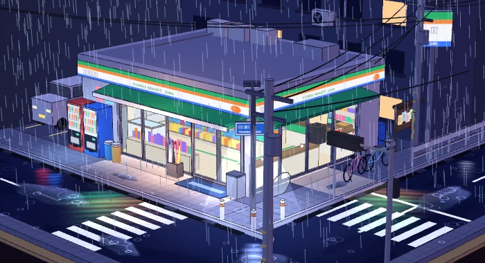
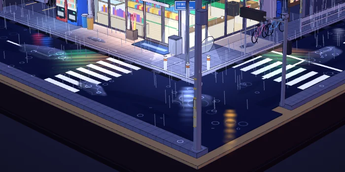

写能用的工具，做能逛的街角。
我是雾晚，做 Android 应用与 GKI 内核工具，也创作雨夜 3D 场景。
看我的作品- wanBox for AndroidAndroid 应用Kotlin/JVM 模块化工程，涵盖订阅与流量等功能接口。
- FinaSU SM8850 Builder内核构建适配 FinaSU 管理器的 OPPO、一加、realme SM8850 6.12 构建器。
- SM8850 Kernel Builder自动化构建为 OPPO、一加与 realme 设备自动构建 SM8850 系列内核。
- GKI_FinaSUGKI 内核集成 FinaSU 与 SUSFS 的 GKI 内核自动化构建。
- AnyKernel3内核工具支持 SukiSU、BakaSU、FinaSU 与 SUSFS 的通用内核项目。
- rea逆向分析用 agents 辅助分析，从应用行为追到原生二进制。


一个安静的路口，一场还没停下的雨。
完整视角在可交互场景里。
关于我
你好，我是雾晚。我的项目横跨 Android 客户端、GKI 内核工具与逆向分析：有时拆解复杂的工程问题，把它们整理成可靠的模块；有时换一种方式，把雨夜街角做成能亲手探索的 3D 场景。
这里放着我正在维护的开源仓库，也留了一处小小的便利店。你可以从代码看起，也可以进去转转。
聊点正在做的。
想交流 Android 开发、内核工具，或交换最近做出的东西？欢迎来聊。